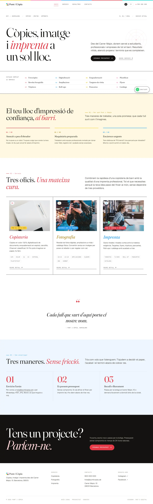
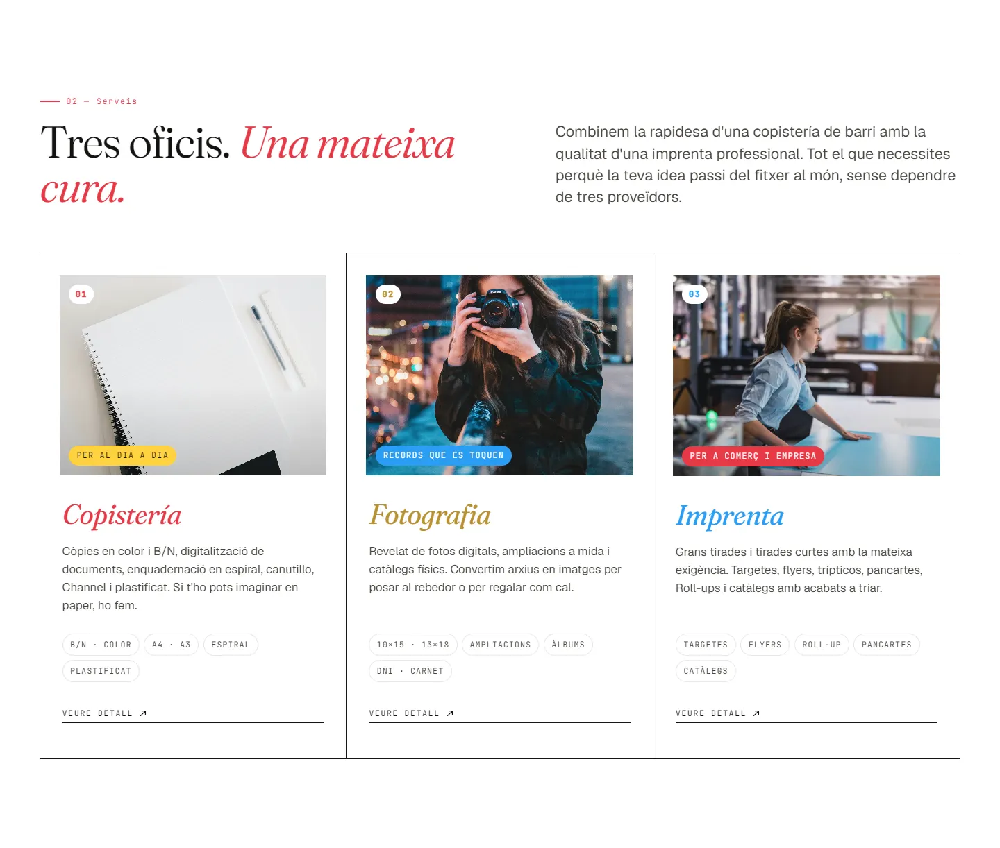
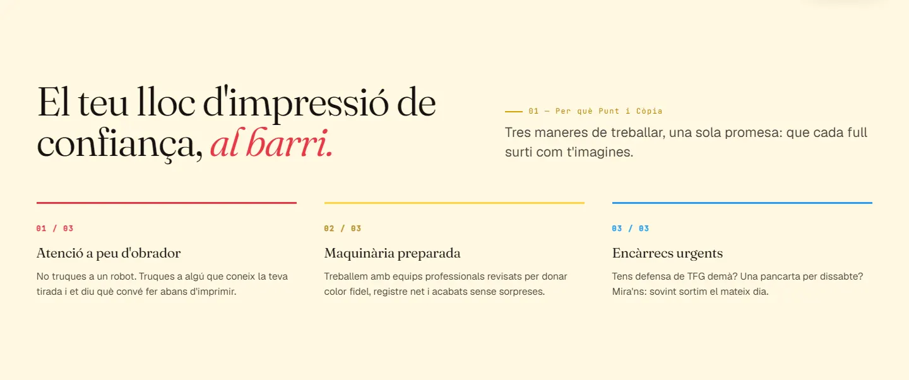
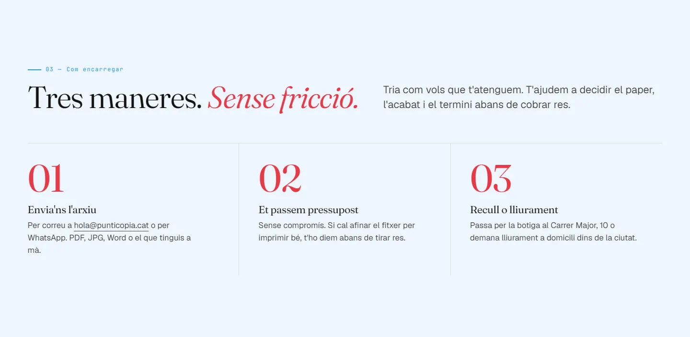
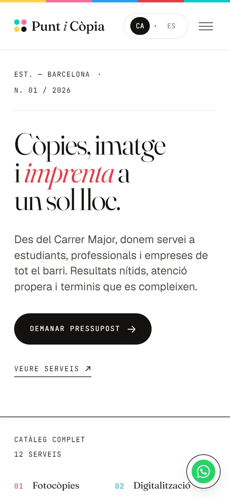
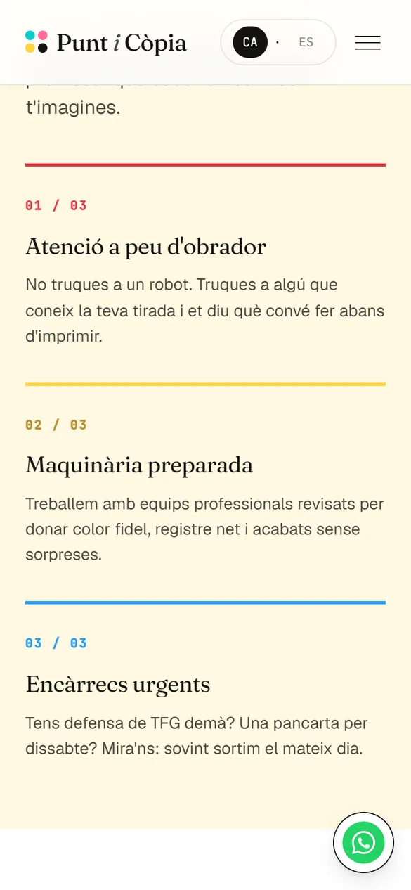
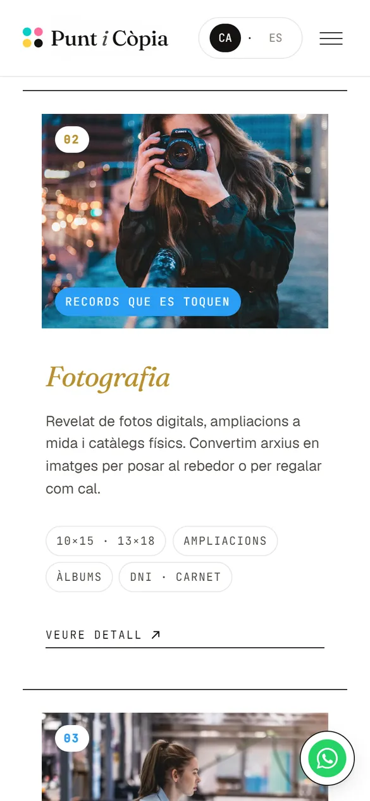
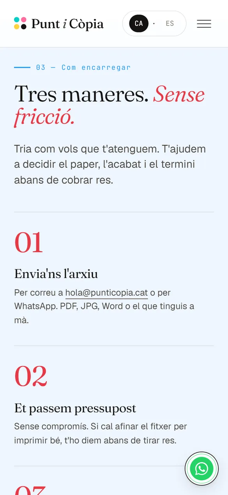

Caso 06 · Copistería
Punt i Còpia
Una copistería de barrio con web de revista. Una demo bilingüe para copisterías, fotografía e imprentas, pensada para que pedir un presupuesto cueste lo mismo que mandar un mensaje.

- 2idiomas: catalán y castellano
- 12servicios en el catálogo
- 3pasos para pedir presupuesto
01 — El reto
Hacen de todo,
pero no se ve.
Las copisterías de barrio hacen de todo: apuntes, trabajos de fin de grado, fotos de carnet, flyers, pancartas. Pero en internet suelen quedarse en una ficha de Google Maps.
Quien busca «imprimir TFG» o «imprenta flyers» no sabe si ese local hace lo que necesita, cuánto tarda o cómo enviar el archivo, así que llama o se va a una imprenta online. Y en zonas bilingües, la web tiene que hablar catalán y castellano sin que ninguno parezca de segunda.
Recorrido
La web,
de arriba abajo.
- 01Portada de revista y el catálogo completo.
- 02Tres oficios: copistería, fotografía e imprenta.
- 03Presupuesto en tres pasos.
- 04Contacto y cierre con WhatsApp.

02 — La solución
Seis decisiones
de imprenta.
-
01
Bilingüe de verdad
Catalán y castellano con un selector que recuerda el idioma. Hasta el mensaje de WhatsApp cambia.
-
02
Catálogo de 12 servicios
Una tira editorial con todo lo que se hace en el local, de las fotocopias a los roll-ups.
-
03
Tres oficios, una web
Copistería, fotografía e imprenta con su ficha, sus fotos y sus servicios.
-
04
Presupuesto en tres pasos
Envías el archivo, recibes el precio y recoges o pides entrega. Sin miedo a preguntar.
-
05
WhatsApp siempre a mano
Botón flotante con el mensaje ya escrito en el idioma de quien visita.
-
06
Pensada para el barrio
Dirección, horario y cómo llegar, con estructura lista para «copistería cerca de mí».

03 — El diseño
Huele a tinta
recién impresa.
FrauncesTitulares: cursivas de revista
GeistTexto: lectura cómoda
- Papel
#F0EDE5 - Negro tinta
#131210 - Magenta
#E63946 - Cian
#2A9DF4 - Amarillo
#FFD23F
La paleta sale del oficio: las tintas de impresión sobre fondo de papel, en la franja superior, en la numeración de cada sección y en los cuatro puntos del logo. La página se lee como la portada de una revista de barrio y se usa como una tienda.


04 — En el móvil
Pensada para
pedir desde el móvil.





¿Te imaginas la tuya?
¿Tu negocio necesita una web así?
Cuéntame qué necesitas y te propongo el camino más corto para conseguirlo. Presupuesto cerrado en 24 horas.